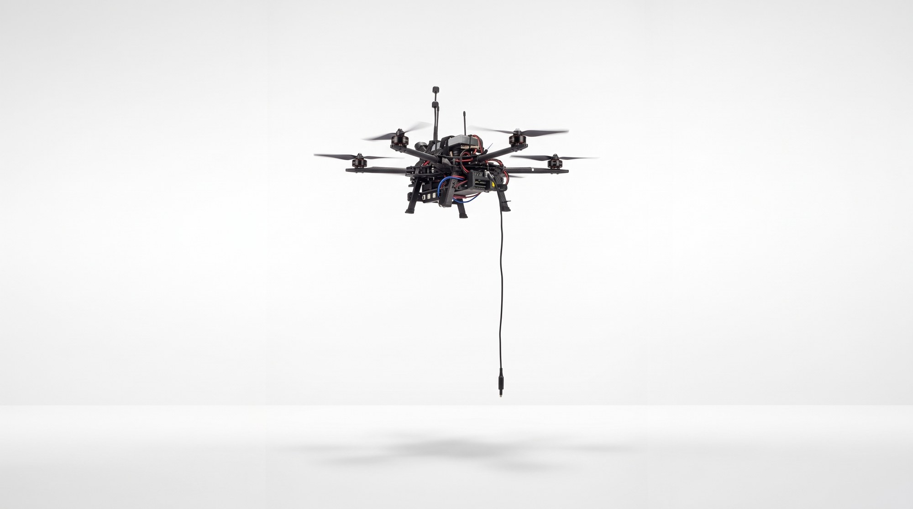
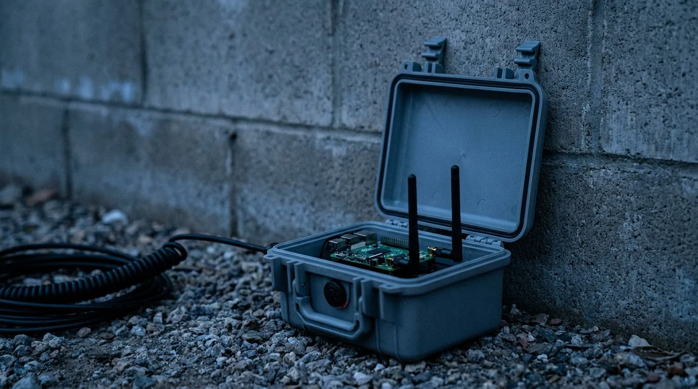
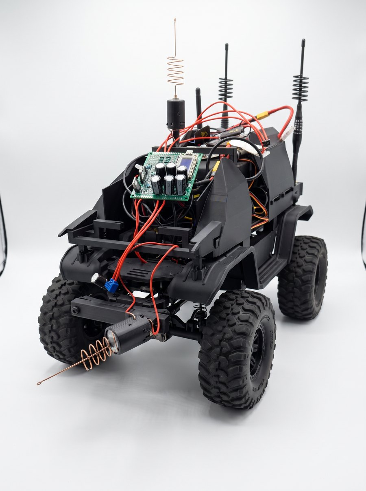
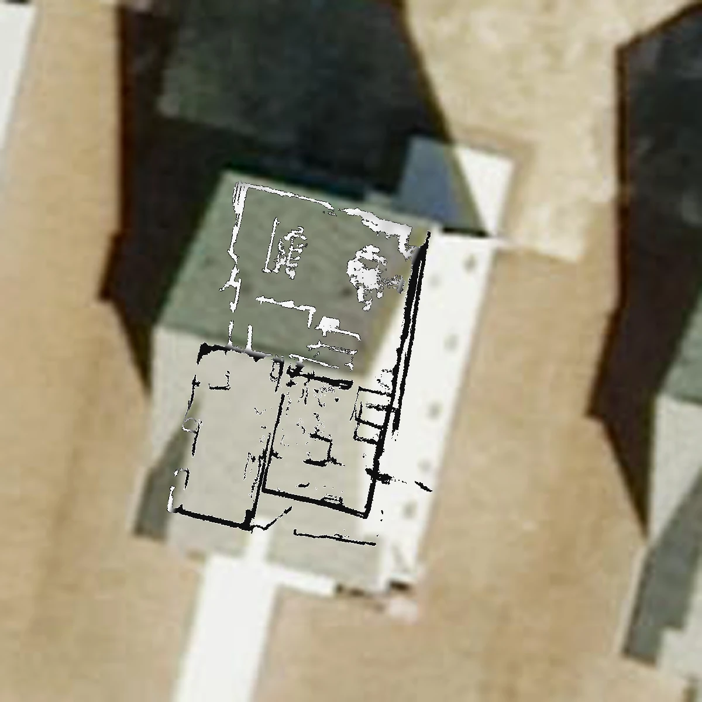
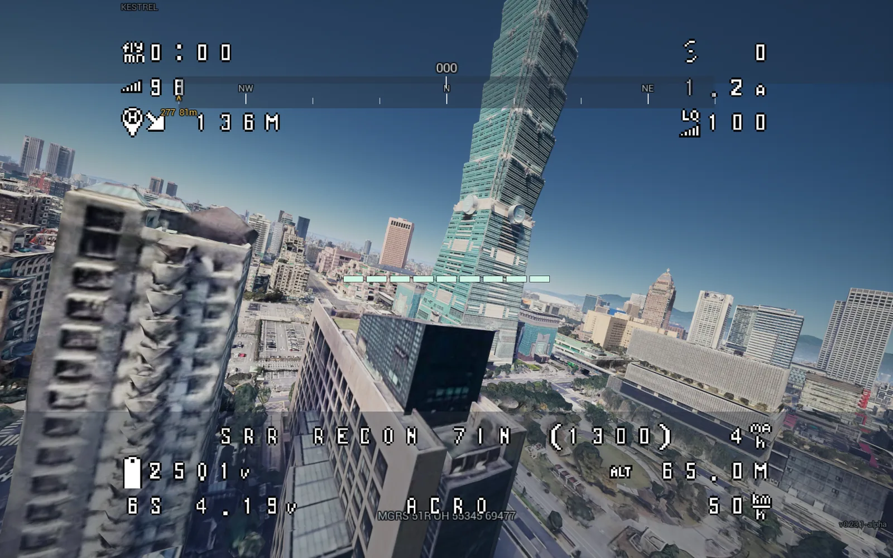
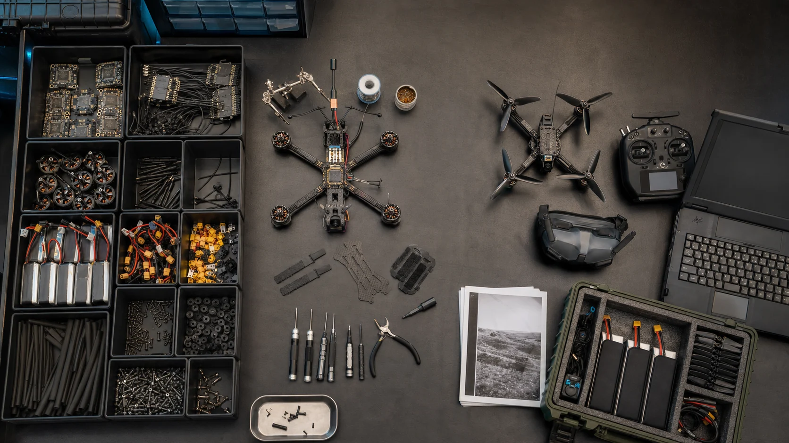
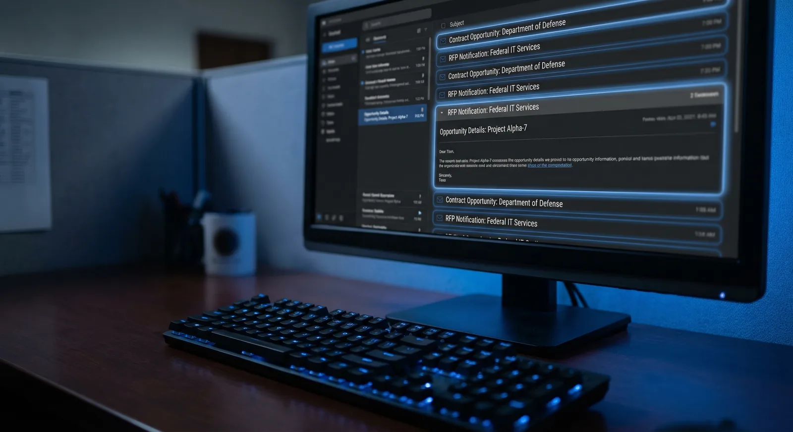
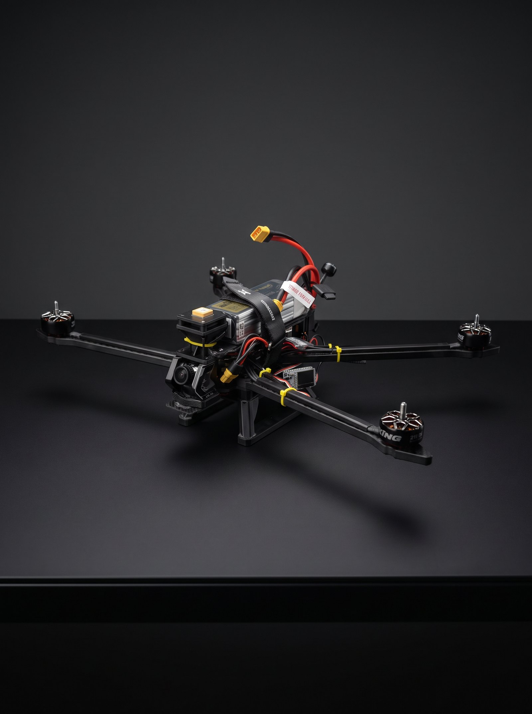
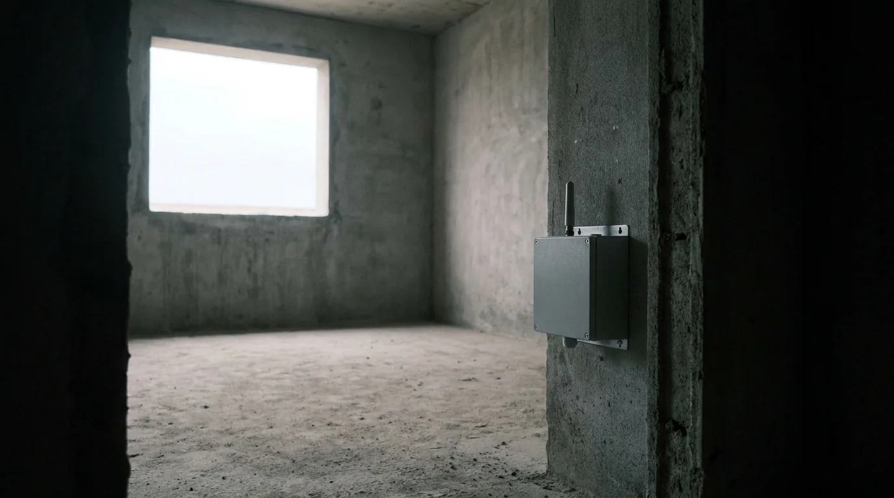
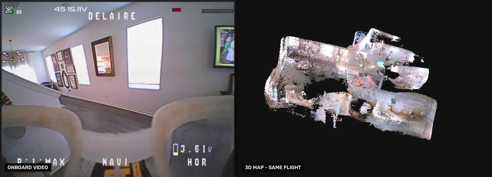

Sensing, mapping, and mission-rehearsal systems for the people who go through the door — built on hardware their unit can afford to field.
Veteran-founded SDVOSB / Utah
CAGE 179U9 / UEI UZA9PFJ9RDL6
SAM.gov active through 2026-12-05

Six systems, one discipline: make the unseen usable.
Every Ceradon system does one job — sense, map, build, rehearse, or find — and delivers its output at the edge, in formats operators already use.
Detects human presence through walls by reading ambient RF. Zero emissions — nothing to detect, jam, or trace.
TRL 4ATAK / CoT out

02 RAPTOREdge AI visionReal-time detection and classification for drones, UGVs, and fixed sites. Field-retrainable on low-cost edge compute, no cloud.
Fielded pilotsUAS / UGV / fixed

03 LANTERNVideo to floorplanTurns drone or walkthrough video into a georeferenced interior floorplan on ATAK. No survey, about two minutes on a laptop.
No LiDAR, no GPSATAK overlay

04 KESTRELsUAS mission rehearsalLoads any coordinate on Earth in photoreal terrain, flies aircraft built from your actual parts, and scores the run.
Design partnersWindows trainer

05 COTS ARCHITECTUxS build planningTurns lab inventory into validated UxS builds, RF evidence, and concise technical handoff packages.
ShippingOffline-first

06 SCOUTContract intelligenceScans SAM.gov, Grants.gov, and SBIR.gov daily and scores every opportunity against your NAICS codes and set-asides.
Live SaaSFree tier

Built by people who have carried the kit.
Veteran-founded and field-informed. Every system ships on commodity hardware, runs at the edge without a cloud connection, and speaks the formats operators already use — because the team has stood where the end user stands.
GROUP-1 QUAD / 2.4 + 5.8 GHZ / EDGE CLASSIFIER ONBOARD

VANTAGE. See through walls. Stay invisible.
VANTAGE reads the distortions human bodies leave in the ambient RF field to detect presence through solid walls — without transmitting a thing.
| EMISSIONS | Zero. Passive receive only — invisible to EW and RF detection. |
|---|---|
| COST | Commodity hardware at roughly a tenth of $60K–$85K active-radar systems. |
| MATURITY | TRL 4, lab validated. Active development toward operational deployment. |
| OUTPUT | Presence alerts as ATAK CoT, JSON, or CLI, from networked mesh nodes. |
| MISSION SETS | Breach and clearing, LE/SWAT, search and rescue, facility security, SIGINT. |

KESTREL. Fly the mission before you fly it.
Drop a pin anywhere on Earth. KESTREL loads that coordinate in photoreal terrain, flies an aircraft built from the parts your team actually stocks, and scores the run against the mission you built on that ground — day, dusk, or on the low-light camera after dark.
ANY COORDINATE / PHYSICS FROM REAL PARTS / DAY–NIGHT SENSOR

LANTERN. One drone goes in. Everybody gets the floorplan.
LANTERN turns drone or walkthrough video into a georeferenced interior floorplan for ATAK — no survey, no ground truth, about two minutes on a laptop. The assault force, the QRF, and the TOC all see the same interior before anyone goes through the door.
| INPUT | Onboard or handheld video. No LiDAR, no GPS, no survey. |
|---|---|
| OUTPUT | Georeferenced floorplan, ATAK overlay. |
| RUNTIME | About two minutes on a laptop. |
Intelligent Systems: an AI department, installed — not subscribed to.
The engineers who build Ceradon's defense systems design and install connected AI agents inside your business — wired into the tools you already use. Engagements start at $2,500, live in about fourteen days, and you own everything we build.
Tell us the mission. We'll tell you which system fits.
Program managers, unit innovation cells, prime integrators, public-safety teams — whether it's through-wall sensing, interior mapping, or mission rehearsal, start the conversation here.